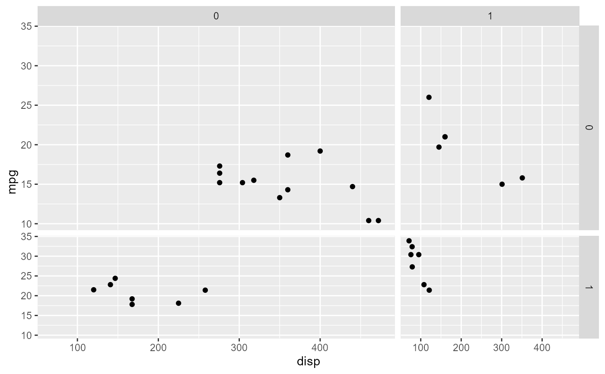

Takes a ggplot and modifies its facet drawing behaviour such that the widths and heights of panels are set by the user.
force_panelsizes(rows = NULL, cols = NULL, respect = NULL)
| rows | a |
|---|---|
| cols | a |
| respect | a |
A forcedsize S3 object that can be added to a plot.
Forcing the panel sizes should in theory work regardless of what
facetting choice was made, as long as this function is called after the
facet specification. Even when no facets are specified, ggplot2 defaults to
the facet_null specification; a single panel.
force_panelsizes works by wrapping the original panel drawing
function inside a function that modifies the widths and heights of panel
grobs in the original function's output gtable.
When rows or cols are numeric vectors, panel sizes are
defined as ratios i.e. relative "null" units. rows and
cols vectors are repeated or shortened to fit the number of panels
in their direction. When rows or cols are NULL, no
changes are made in that direction.
When respect = NULL, default behaviour specified elsewhere is
inherited.
No attempt is made to guarantee that the plot fits the output device. The
space argument in facet_grid will be
overruled. When individual panels span multiple rows or columns, this
function may not work as intended.
ggplot(mtcars, aes(disp, mpg)) + geom_point() + facet_grid(vs ~ am) + force_panelsizes(rows = c(2, 1), cols = c(2, 1))